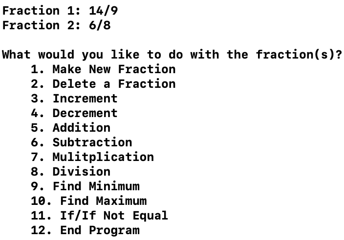

I started leaning C a little bit after I began to learn C++ due to a discrepancy in the description of my programmin course. When I read the descrption of my course it said the language of focus was C. Becuase of this, I began to learn C in preparation for my class. In reality, however, the programming language my coures was focused on was C++. Due to this simple inconsistency in the description, I went on to learn many of the basic principals of C with me even getting to start understanding recursion functions as well as creating my own structs as the last thing I was doing.
Simlar to C++, I have had many programs made with C but most arn't noteworthy. There is however, one decent project that took more time than any other project to complete as well as the most code.
|  |
Fraction CalculatorMy Fraction Calculator program utilizes a new type of struct called Fraction that holds 2 integers for the numerator and the denominator. The program can then do many types of operations onto the fractions stored in it.
|